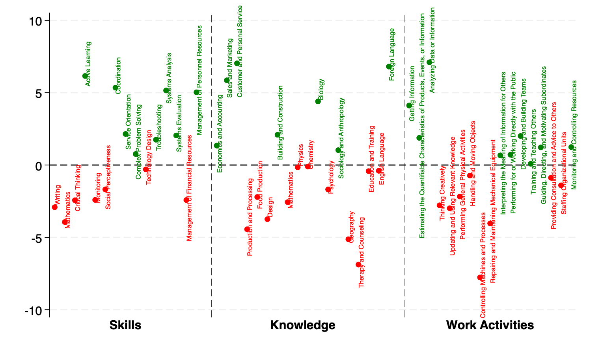

Skip to the content.
Data
Data.
View on GitHub
Download the data
Occupational Green Potential [CSV]
Green & Brown Jobs [CSV]
All Skills and Job Zone [xlsx]
Crosswalk between SOC2018 and OCC1990 [CSV]
Green Skills
What are green skills? 
Back